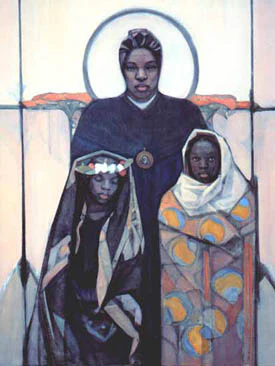
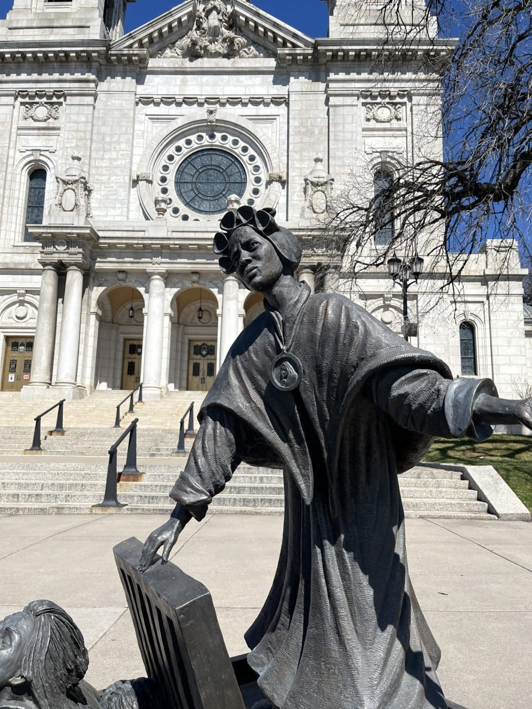
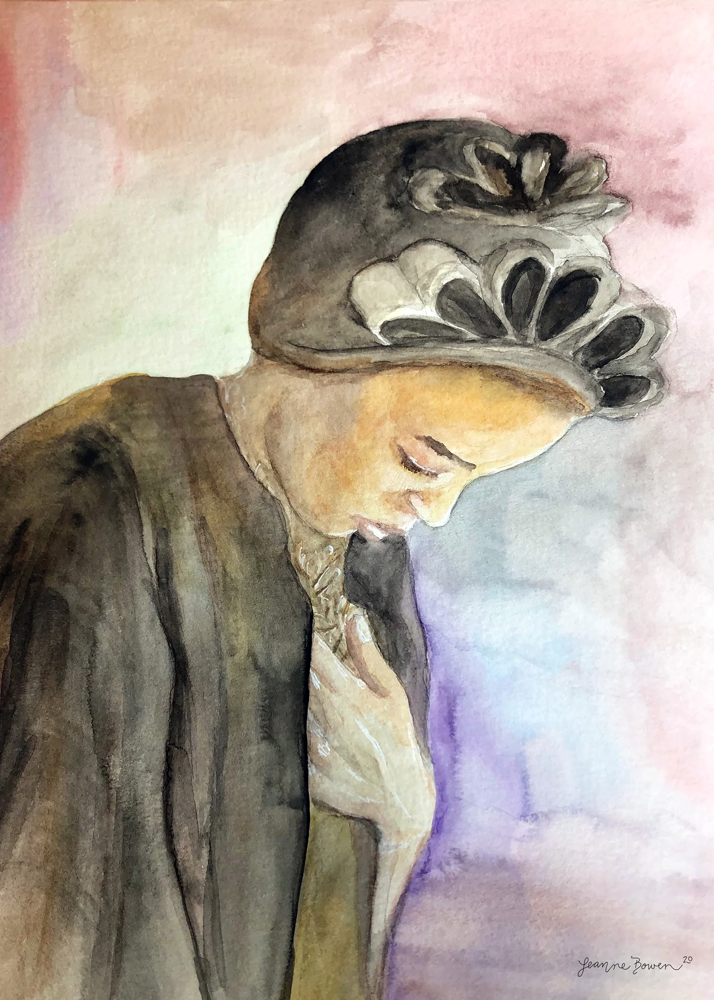

"A Madre Moretta" — Da escravidão à santidade
"Se eu encontrasse os traficantes que me capturaram, eu os agradeceria e beijaria as mãos — porque me trouxeram até Deus."
Bakhita nasceu por volta de 1869 em Olgossa, na região de Darfur, no Sudão. Pertencia a uma família relativamente estável e recordaria mais tarde uma infância marcada pela simplicidade e pelo contato com a natureza. Seu nome verdadeiro jamais foi recuperado. Quando foi sequestrada por traficantes árabes de escravos, o trauma foi tão profundo que ela esqueceu o próprio nome — e os sequestradores passaram a chamá-la de Bakhita, palavra árabe que significa "afortunada" ou "sortuda", um nome carregado de amarga ironia diante do sofrimento que viveria.
Ela tinha cerca de 7 anos quando foi arrancada de sua família durante uma incursão de traficantes. Nos anos seguintes, atravessou o brutal sistema escravista que operava no nordeste africano do século XIX. Foi vendida e revendida diversas vezes, passando pelas mãos de diferentes senhores. Em alguns lugares recebeu tratamento menos severo; em outros, sofreu humilhações, espancamentos e violência extrema. O episódio mais traumático ocorreu sob domínio de um oficial turco, quando foi submetida a um ritual de marcação corporal: cerca de 60 desenhos e incisões foram gravados em sua pele com lâminas, especialmente no peito e no abdômen, sendo depois preenchidos com sal para cicatrização permanente. O processo durou semanas e ela o recordaria como a maior dor física de toda a sua vida.
Em 1883, Bakhita foi adquirida pelo cônsul italiano Callisto Legnani, residente em Cartum. Pela primeira vez desde o sequestro, encontrou alguém que a tratasse com respeito e humanidade. Legnani não a castigava nem a agredia, experiência que marcou profundamente sua memória. Quando o cônsul retornou à Itália em 1885, Bakhita o acompanhou e acabou sendo confiada à família Michieli, tornando-se acompanhante e babá da pequena Alice Michieli.
Em 1888, enquanto os Michieli precisavam viajar, Bakhita e a criança foram deixadas num instituto administrado pelas Irmãs Canossanas, em Veneza. Foi ali que sua vida tomou um rumo decisivo. Pela primeira vez ouviu falar do cristianismo e conheceu a ideia de um Deus que era Pai amoroso e providente. Mais tarde recordaria que, ainda criança no Sudão, contemplava o céu estrelado e a beleza da natureza perguntando-se quem teria criado tudo aquilo. No Deus apresentado pelas irmãs reconheceu aquele Mistério que intuitivamente já buscava. Após um período de catequese, recebeu o batismo, a crisma e a primeira comunhão em 9 de janeiro de 1890, adotando o nome de Josefina Margarida Fortunata. Sobre essa descoberta, afirmaria: "Sinto que este Deus é o mesmo de quem eu sempre soube, sem saber seu nome."
Quando a família Michieli desejou levá-la novamente para a África, Bakhita tomou uma decisão que mudaria sua história: recusou-se a partir. A questão chegou aos tribunais italianos, num caso raro e emblemático para a época. Em 1889, o tribunal decidiu que ela não podia ser obrigada a regressar nem tratada como propriedade, pois a escravidão não era reconhecida legalmente na Itália. Pela primeira vez desde o sequestro, a lei confirmava aquilo que seu coração já começava a compreender: Bakhita era livre.
Liberta juridicamente e espiritualmente transformada, decidiu permanecer com as Irmãs Canossanas. Em 1896, entrou oficialmente como noviça e professou seus votos religiosos pouco depois. Viveu os seguintes 45 anos em Schio, no norte da Itália, levando uma existência simples e silenciosa. Trabalhou como cozinheira, costureira, porteira e sacristã, acolhendo visitantes e peregrinos com um sorriso constante e uma serenidade que impressionava todos os que a conheciam.
Em Schio, tornou-se conhecida carinhosamente como "Madre Moretta" — a "Madre Negra". O apelido, comum na linguagem italiana da época, era usado com afeto pelos habitantes locais, que viam nela uma presença de bondade incomum. Sua fama cresceu não por feitos extraordinários, mas pela maneira concreta com que vivia a fé: paciência diante das dificuldades, humildade no serviço e ausência quase absoluta de ressentimento pelo passado.
Quando lhe perguntavam sobre os traficantes e senhores que a escravizaram, surpreendia a todos com palavras de perdão radical: "Se eu encontrasse os traficantes que me capturaram, eu os agradeceria e beijaria as mãos — porque me trouxeram até Deus." Não se tratava de justificar a escravidão ou a violência sofrida, mas de reconhecer que a graça de Deus havia sido capaz de transformar até mesmo a maior tragédia em caminho de redenção.
Nos últimos anos, sofreu intensamente com doenças, dores físicas e limitações progressivas. Muitas vezes revivia em febres e delírios as cenas do cativeiro, clamando por liberdade como na infância roubada. Ainda assim, conservava uma confiança serena. Aos que a visitavam repetia frequentemente: "Estou sofrendo. Mas estou contente. Muito contente." Morreu em 8 de fevereiro de 1947, em Schio, com cerca de 78 anos, deixando uma reputação de santidade que rapidamente se espalhou pela Itália e pelo mundo.
Da escravidão no Sudão à santidade na Itália — uma vida de perdão radical
c. 1869
Nasce em Olgossa, Sudão. Seu nome real nunca foi recuperado — ficou conhecida pelo nome árabe dado pelos traficantes.
c. 1876 · 7 anos
É sequestrada por traficantes de escravos enquanto brincava perto de casa. Nunca mais veria a família.
1876 – 1885
É vendida e revendida cinco vezes. Sofre maus-tratos graves, incluindo 60 tatuagens-cortes impostas à força como marca de propriedade.
1885
É comprada pelo cônsul italiano Callisto Legnani, que a trata com bondade. Acompanha a família à Itália em 1885.
1890
É batizada em 9 de janeiro de 1890 em Veneza. O tribunal italiano declara sua liberdade quando a família tenta levá-la de volta ao Sudão.
1896
Entra como noviça nas Irmãs Canossanas. Vive os seguintes 45 anos em Schio, tornando-se a "Madre Moretta" amada por todos.
8 Fev 1947
Falece em Schio com cerca de 78 anos, repetindo até o fim: "Estou sofrendo. Mas estou contente."
1 Out 2000
João Paulo II a canoniza em Roma. É a primeira santa africana moderna e padroeira do Sudão e das vítimas de escravidão.
Os prodígios reconhecidos pela Igreja para sua beatificação e canonização
01
Itália
Uma criança italiana sofria de infecção generalizada considerada fatal pelos médicos. Após intensa oração pela intercessão de Josefina Bakhita, a criança se recuperou completamente de forma inexplicável. O caso foi investigado e reconhecido pelo Vaticano, abrindo o caminho para a beatificação em 1992.
Aprovado em 1991 · para a Beatificação02
Itália
Um segundo caso de cura inexplicável atribuída à intercessão de Bakhita foi investigado e aprovado pelo Dicastério para as Causas dos Santos. O milagre envolveu recuperação súbita e completa de doença grave, habilitando a canonização pelo Papa João Paulo II em outubro de 2000.
Aprovado em 1999 · para a CanonizaçãoImagens da vida de Santa Josefina Bakhita



Imagens utilizadas sob licença de seus respectivos autores. Créditos completos disponíveis aqui.
Documentação utilizada para a elaboração deste perfil
História de Bakhita — Contada por ela mesma
Josefina Bakhita · Editora Paulinas, 2000
Bakhita — De Escrava a Santa
Roberto Italo Zanini · Editora Canção Nova, 2001
Spe Salvi — Bento XVI cita Bakhita como testemunha da esperança
Papa Bento XVI · Santa Sé · 30 de novembro de 2007
Canonização de Josefina Bakhita — Homilia de João Paulo II
Santa Sé · 1 de outubro de 2000
Senhor Jesus, Tu que transformas o sofrimento em graça e a escravidão em liberdade, concede-nos, pela intercessão de Santa Josefina Bakhita, a graça de encontrar em Ti aquele Pai que ela descobriu depois de anos de dor.
Ela poderia ter guardado ódio para o resto da vida — e ninguém a teria culpado. Escolheu o perdão. Não por fraqueza, mas porque conheceu um amor maior do que toda a crueldade que sofreu. Que seu exemplo nos ensine que o perdão não apaga o passado — mas nos liberta dele.
Santa Bakhita, padroeira do Sudão e de todos os que sofrem a escravidão e o tráfico humano, intercede por todos os que hoje são explorados, oprimidos e sem esperança. Que encontrem, como você encontrou, um Deus que os chama pelo nome. Amém.
· Para uso privado · Aprovação eclesiástica recomendada ·